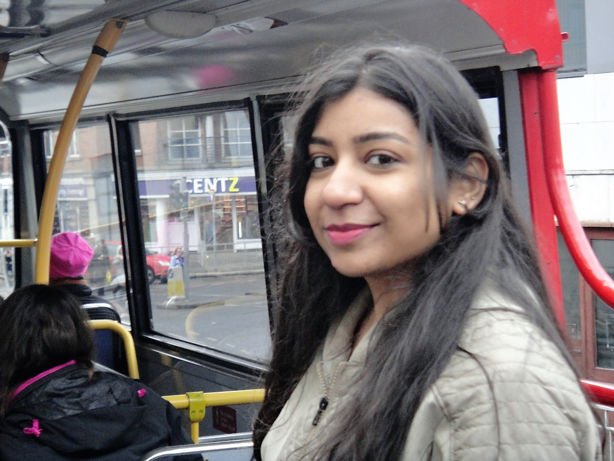

About Me
"I'm Priya. With 4 years’ experience in testing flows and tools creation, I now started my graduation degree in Lamar University and seeking full time internship – SUMMER 2018.
I have experience in developing tools and products which increase the efficiency. Work closely with development teams to ensure accurate integration of machine learning models into firm platforms.
So far, I am skilled in developing web service using oracle service bus, tools using Telerik UI on ASP.net MVC and automation area with selenium and micros.
Led the Scrum testing team of Integration Application and visited customer site (Dublin, Ireland) to collect business requirements."